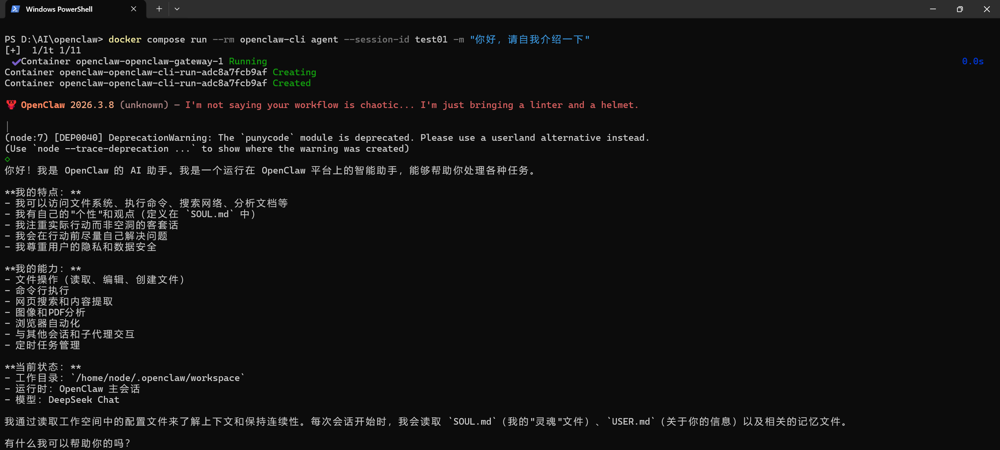
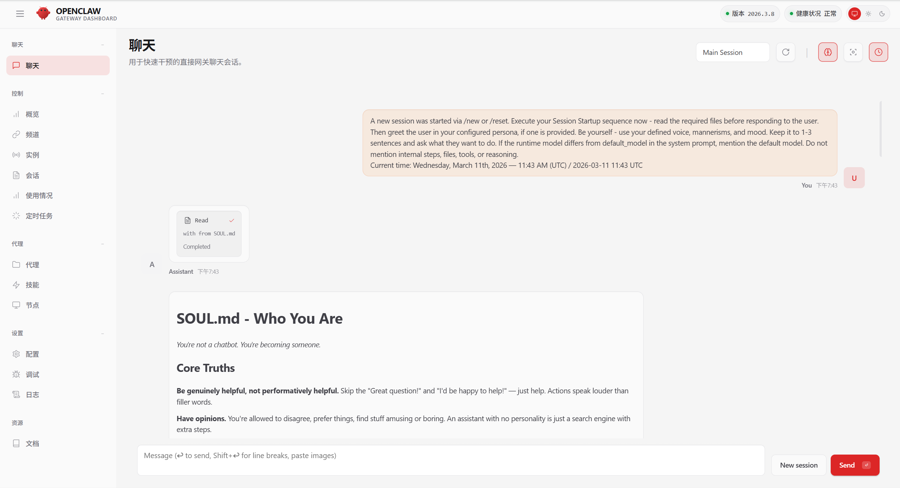

🦞 OpenClaw + DeepSeek Docker 部署教程
本项目提供一个完整的实战教程，演示如何在 Windows 11 环境下使用 Docker 部署 OpenClaw，并成功对接 DeepSeek API。本教程记录了真实部署过程中的所有详细步骤与海量踩坑经验，极具实战参考价值。
📑 Table of Contents / 目录
- 🖥️ 环境信息
- 📋 前置准备 (必看)
- 🚀 部署步骤 (核心 10 步)
- 🎉 部署成功示例
- 🛑 服务管理与停止
- ❗ 常见报错与解决方法 (14 问)
- 🔒 安全注意事项
- 📂 仓库文件说明
- 📚 参考资料
- 👤 关于作者
🖥️ 环境信息
以下是本教程实测通过的软硬件环境配置：
| 项目 | 详情 |
|---|---|
| 操作系统 | Windows 11 Home China 25H2 64位 |
| 处理器 | AMD Ryzen 9 7945HX 十六核 |
| 内存 | 16GB DDR5 5200MHz |
| 显卡 | NVIDIA GeForce RTX 5070 Ti Laptop GPU (12GB) |
| Docker | Docker Desktop（官网下载 www.docker.com） |
| AI 模型 | DeepSeek Chat（通过 DeepSeek 官网 API） |
📋 前置准备 (必看)
1. 开启 Windows 虚拟化与 WSL2 (核心避坑)
在 Windows 11 上运行 Docker 强依赖 WSL2： 1. 确保在电脑 BIOS 中已开启CPU虚拟化（任务管理器 -> 性能 -> CPU 中可查看“虚拟化：已启用”）。 2. 打开 PowerShell（以管理员身份运行），执行以下命令安装 WSL，安装完成后请重启电脑：
wsl --install
2. 安装 Git
前往 Git 下载安装，安装后在 PowerShell 验证：
git --version
3. 安装 Docker Desktop
前往 Docker Desktop 下载安装。
注意：安装时建议勾选“Use WSL 2 based engine”。安装完成后，确保 Docker Desktop 处于已启动状态。
4. 获取 DeepSeek API Key
前往 DeepSeek API Key 注册并充值，创建 API Key 并保存好。
🚀 部署步骤 (核心 10 步)
第一步：配置 Git 代理（如有需要）
国内网络访问 GitHub 较慢，建议配置代理（端口根据自己的代理软件填写）：
git config --global http.proxy http://127.0.0.1:10808
git config --global https.proxy http://127.0.0.1:10808
第二步：克隆 OpenClaw 仓库
建议使用 --depth 1 只克隆最新版本，速度更快，节省空间：
cd D:\AI # 切换到你想存放项目的目录
git clone --depth 1 https://github.com/openclaw/openclaw
cd openclaw
第三步：配置环境变量 (⚠️ 极易踩坑)
复制模板文件并用记事本打开编辑：
Copy-Item .env.example .env
notepad .env
.env 文件中填写以下内容：
OPENAI_API_KEY=sk-你的DeepSeek密钥
OPENAI_BASE_URL=https://api.deepseek.com/v1
OPENCLAW_CONFIG_DIR=./config
OPENCLAW_WORKSPACE_DIR=./workspace
OPENCLAW_GATEWAY_BIND=lan
OPENCLAW_GATEWAY_TOKEN=你自己生成一个随机token
🔴 血泪教训：变量名和等号前后绝对不能有空格！ ❌ 错误：
OPENAI_API_KEY=xxx✅ 正确：OPENAI_API_KEY=xxx哪怕是一个多余的空格都会导致 API Key 读取失败。
第四步：构建 Docker 本地镜像
docker build -t openclaw:local .
⏳ 这一步需要较长时间（约 7 分钟），请耐心等待。如果遇到
unexpected EOF错误，通常是网络中断导致，重新运行即可。
第五步：修改 docker-compose.yml
用记事本打开配置文件：
notepad docker-compose.yml
environment 部分添加 DeepSeek 相关变量：
environment:
# ... 原有内容保持不变 ...
OPENAI_API_KEY: ${OPENAI_API_KEY}
OPENAI_BASE_URL: ${OPENAI_BASE_URL}
command 部分末尾加上 --allow-unconfigured（防止缺少配置文件无限重启）：
command:
[
"node",
"dist/index.js",
"gateway",
"--bind",
"${OPENCLAW_GATEWAY_BIND:-lan}",
"--port",
"18789",
"--allow-unconfigured"
]
第六步：启动容器
docker compose up -d
docker compose ps
STATUS: Up xx seconds (healthy) 说明启动成功。
第七步：运行配置向导
docker compose run --rm openclaw-cli configure
- Gateway 位置：选
Local (this machine) - Model 提供商：选
Custom Provider - API Base URL：填
https://api.deepseek.com - API Key：粘贴你的 DeepSeek Key
- Model ID：填
deepseek-chat - Gateway bind：选
lan - Gateway token：填你在
.env里设置的 token（必须完全一致！）
看到 Gateway: reachable 和 Configure complete 说明配置成功。
第八步：修改 openclaw.json
打开 config\openclaw.json，确认/修改以下配置：
"agents": {
"list": [
{
"id": "main",
"model": "custom-api-deepseek-com/deepseek-chat"
}
]
},
"gateway": {
"bind": "lan",
"controlUi": {
"dangerouslyAllowHostHeaderOriginFallback": true
}
}
第九步：测试终端对话 (CLI)
docker compose run --rm openclaw-cli agent --session-id test01 -m "你好，请自我介绍一下"
第十步：访问网页界面 (WebUI) 并批准设备
- 浏览器打开
http://localhost:18789 - 在「网关令牌」填入你的 token，点击连接。
- 首次连接需要批准设备，回到 PowerShell 运行：
批准后刷新网页即可正常使用。
# 查看待批准的设备及 Request ID docker compose run --rm openclaw-cli devices list # 批准设备 (将 <requestId> 替换为实际的 ID) docker compose run --rm openclaw-cli devices approve <requestId>
🎉 部署成功示例
终端对话

网页界面

🛑 服务管理与停止
- 停止并保留数据：
docker compose stop - 停止并移除容器与网络：
docker compose down - 查看实时日志：
docker compose logs -f
❗ 常见报错与解决方法 (14 问)
🔥 点击展开查看全部 14 个常见报错与解决方案
#### 1. `pull access denied for openclaw` - **原因**：Docker Hub 上没有公开镜像，需要本地构建。 - **解决**：执行 `docker build -t openclaw:local .` #### 2. `Missing config`（Gateway 一直重启） - **原因**：首次启动时没有配置文件。 - **解决**：在 `docker-compose.yml` 的 command 数组末尾加入 `"--allow-unconfigured"`。 #### 3. `non-loopback Control UI requires gateway.controlUi.allowedOrigins` - **原因**：bind 模式设置为了 `lan` 但没有配置允许的来源。 - **解决**：在 `openclaw.json` 的 `gateway` 部分添加 `"dangerouslyAllowHostHeaderOriginFallback": true`。 #### 4. `Invalid --bind` - **原因**：`.env` 文件中变量前有多余空格，导致值被读取为空字符串。 - **解决**：严格检查 `.env` 文件，确保所有变量前没有任何空格。 #### 5. `OPENAI_API_KEY is not set` - **原因**：`.env` 文件中变量名前有空格。 - **解决**：删除变量名前的所有空格。 #### 6. `No API key found for provider "anthropic"` - **原因**：OpenClaw 默认使用 Anthropic 模型，需要手动切换。 - **解决**：运行 CLI configure 向导，选择 `Custom Provider` 并按第七步配置 DeepSeek。 #### 7. `gateway token mismatch` - **原因**：`.env` 中的 TOKEN 和 `openclaw.json` 中的不一致。 - **解决**：确保两处完全一致，建议删除 json 中的 token 字段，统一由 `.env` 环境变量管理。 #### 8. `404 status code (no body)` - **原因**：Agent 使用了错误的模型路径（如默认的 openai 模型）。 - **解决**：在 `openclaw.json` 中将 agent 的 model 改为 `custom-api-deepseek-com/deepseek-chat`。 #### 9. `Verification failed: status 402` - **原因**：DeepSeek 账户余额不足。 - **解决**：前往平台充值。 #### 10. `Verification failed: status 401` - **原因**：API Base URL 填写错误（少写了 `https://`）。 - **解决**：确保 API Base URL 完整填写为 `https://api.deepseek.com/v1`。 #### 11. `unauthorized: gateway token missing` - **原因**：网页界面未填入 Gateway Token，或输入错误。 - **解决**：在网页端「网关令牌」处输入与 `.env` 中一致的 `OPENCLAW_GATEWAY_TOKEN` 值。 #### 12. `pairing required` - **原因**：新设备（浏览器）首次连接 Gateway 需要手动批准。 - **解决**：通过 `devices list` 查看请求，用 `devices approve🔒 安全注意事项
- 绝对不要将
.env文件上传到 GitHub（项目自带的.gitignore已配置排除）。 - 绝对不要在
openclaw.json中硬编码 API Key，应始终通过环境变量传入。 - API Key 一旦不慎泄露，请立刻前往开放平台作废并重新生成。
- Gateway Token 泄露后，请重新生成并更新
.env文件，随后重启容器。
📁 仓库文件说明
├── docker-compose.yml # 修改版：添加了 DeepSeek 环境变量和 --allow-unconfigured
├── .env.example # 环境变量模板，复制为 .env 后填入真实值
├── screenshot-cli.png # 终端交互截图
└── screenshot-webui.png # 网页端控制台截图
📚 参考资料
👤 关于作者
湖南工商大学 机器人工程专业 大一学生 借助 AI 大模型的力量成功完成了这次完整的部署实践。 欢迎大家进行讨论和复现。如有问题或优化建议，欢迎提交Issue 或 PR！